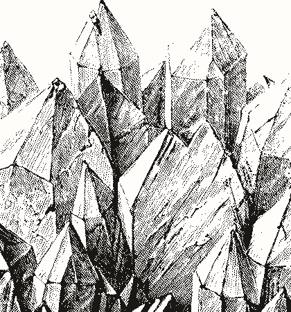
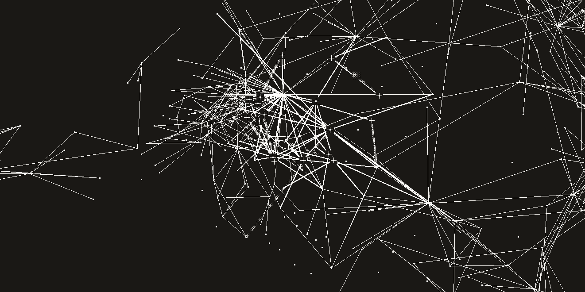
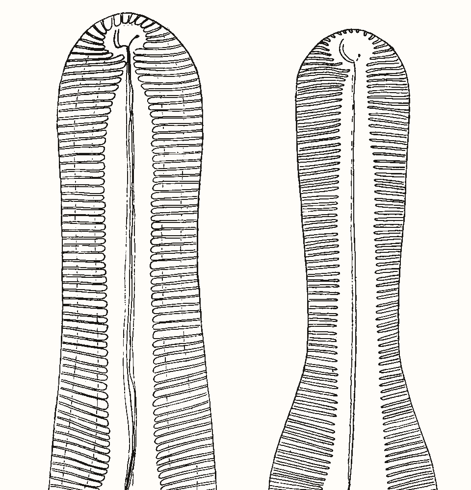

In your browser nothing to install
Add your notes and PDFs, ask, and practise what is due. Notes, files and chats are stored on a server in the EU, in Turin.
Silica answers from the notes and PDFs you give it, names the note behind every answer, and takes back any write that does not hold.
Free pilot, by invitation. You sign in with a one-time code sent to your email. No password.

a b c d eAsked: What do my notes say about Bayes' theorem? Name the notes you used.
Teorema di Bayes presents the theorem as a way to calculate the probability that an event is the cause of an event that has already occurred. It is described as a "posterior search for causes."
P(Hi | E) = P(E | Hi) · P(Hi) / P(E)
Before Silica changes a note it sorts the change by how much the vault already agrees with it. The less agreement, the less ink it puts down on its own.
Reversible, and the structure of the vault already says yes. Silica writes it and logs it.
An orphan note whose title another note already uses gets its link.
Reversible, but only one signal says yes. You see it first and confirm before it lands.
Two notes that share a concept and are not linked yet.
Irreversible, or a call only you can make. Nothing is written: you get the choices.
A link to a note that does not exist, seen twice: create the note, rename one, or leave it.
Fig. 2. One specimen at three densities: a flint core with its flakes fitted back on, from John Evans's Ancient Stone Implements. The three tiers and their rules are the analyst plan in Silica's source (silica/kernel/analyst_plan.py); a move, a delete or a bulk write is never in the first tier.

Point /nucleate at a PDF, a deck, an EPUB or a whole folder and it writes notes in the source's own sentences, one transaction per file, checked against what you already have. Then it links them without asking, but only where the words are already there: a name in a new note that is the title of a note you already have, or a note you already have that names a new one. A link to a note the run never wrote goes back to plain text when the run ends. Pairs that are only related wait for the vault audit, /report --cooccurrence: two notes that share a concept, it proposes and waits for your yes; two joined only by association, or a missing note that keeps being linked, it asks you about. With every wikilink stripped from a real 796-note vault, the same autolink put back 72.3% of the 1,384 links its owner had made.
Source: evals/golden/probe_links.py, 1,384 links across 442 notes, frozen in evals/golden/baseline.json on 2026-08-11; also in Tab. 1.
+a note this run wrote▪a note already there
Illustration. The notes and links are those of Silica's test vault, 748 notes and 1,421 links, cropped around one area. Which links autolink wrote is not recorded there, so this run of 18 notes, its order, and the screened and faint links are drawn for the figure.
Every note a run writes passes parse, structure and link checks, and is read back after it lands. One that fails is sent back. The note stays as it was.
Silica keeps a journal of what it wrote and where it came from, so a write can be taken back after the fact as well, however far it spread.
/undothe last write, one note/revert <run-id>everything one run wrote/revert --source <file>every note made from one PDF/changeswhat this session touched, line by lineEvery number comes from the harness in the repository, run on the product path. The samples are small and they are re-runnable on your machine.
| What was measured | Result | Sample |
|---|---|---|
| Questions the notes can answer, answered right (LoCoMo) | 82.1% · 83.2% | 152 and 150 questions |
| Questions it should refuse, refused (LoCoMo) | 87.2% · 82.1% | 47 and 40 questions |
| Keeping the source's words instead of summarizing them | +16.5 · +14.7 pts | 302 questions, same pipeline |
| Facts in written notes the source supports (FActScore, extractive path) | 0.961 | 237-note vault |
| Notes where no write introduced a structural break | 100% | 796 of 796 notes |
| Wikilinks stripped from a real vault, found again | 72.3% | 1,384 links, 442 notes |
| Agreement between /organize and the folders a person chose | 0.32 | the same vault |
The browser is the quickest start. Silica is open source, so it also runs on your computer, inside Claude Code and inside Obsidian.
Add your notes and PDFs, ask, and practise what is due. Notes, files and chats are stored on a server in the EU, in Turin.
Point it at any folder of Markdown files, adopted as it is. silica init asks where the model runs: a provider you have a key for, or a local model.
$ uv tool install "silica-agent[gui,mcp]" $ cd ~/path/to/your/notes $ silica init $ silica --gui
Indexes the folder Claude Code starts in. Claude searches it before it answers and cites what it used by file and line.
$ claude plugin install silica-core \
--marketplace kiycoh/silica-coreNote panel, ranked search, autolinking and the community graph need no model and no network. The chat panel talks to Silica on your computer, and every write lands in a changes list with a diff per file.
Install from the latest release, then run silica connect in the vault.
The pilot runs on one server, for people invited one by one. Four facts from its privacy notice and terms.
Open Silica, add your notes and PDFs, and ask the first question.
Open Silica Not invited yet? Write to kiycoh@proton.me.